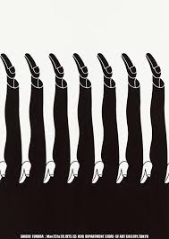

This poster creates an illusion of depth and perspective, with the doors appearing to open into another dimension.

Japanese Poster: Nagasaki 50. Shingeo Fukuda. 1995
This is a poster that was made for the second Waa Grand Prix, an event in Japan.

This poster, titled "Rio 92", was a gift from the artist for the 2nd United Nations Conference.
.jpg)
This poster creates an illusion of movment and perspective, with the man going through a curled up piece of paper.
.jpg)
This poster was made for Expo '70, the World's Fair held in Osaka, Japan in 1970. The design is a mondernist interpretation of a cherry blossom.

Noted as one of his most recognizable poster designs, it features a stark contrast between the play on negative and positive space, transforming into two distinct pairs of legs.
This poster, titled "No More War", was made in 1968. By combining a skull, a symbol of death, with military imagery, Fukuda highlights the brutal effects of war. The poster clearly says that war leads to death and calls for peace, urging viewers to reject violence.

This design creatively blends and morphs legs to form the shape of a paperclip, showcasing a clever interplay of simplicity and conceptual depth.
This poster was made for the "Intern Design '81" confrence held in Sendai, Japan. It features intericate black lines forming the shape of two hands clasped together, symbolizing collaboration and cultural exchange.
This poster was made for Earth Day in 1982. Fukuda used his talent of design to convey powerful messages, such as enviormental advocacy.